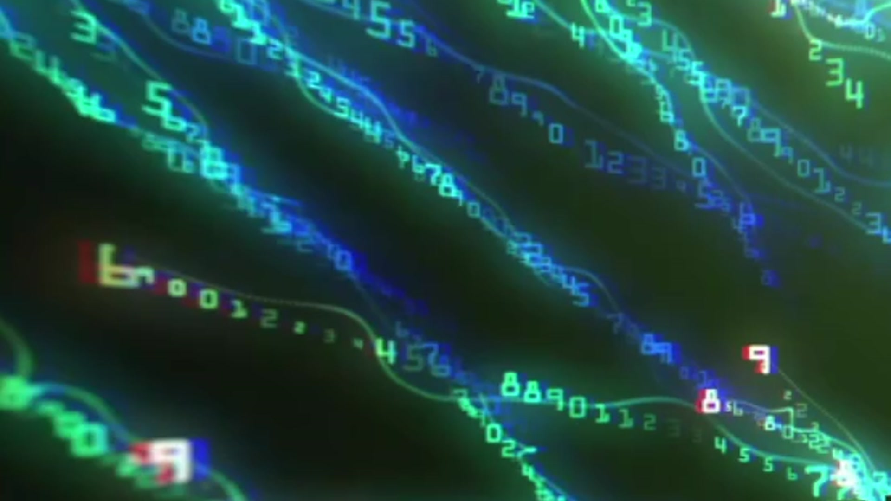
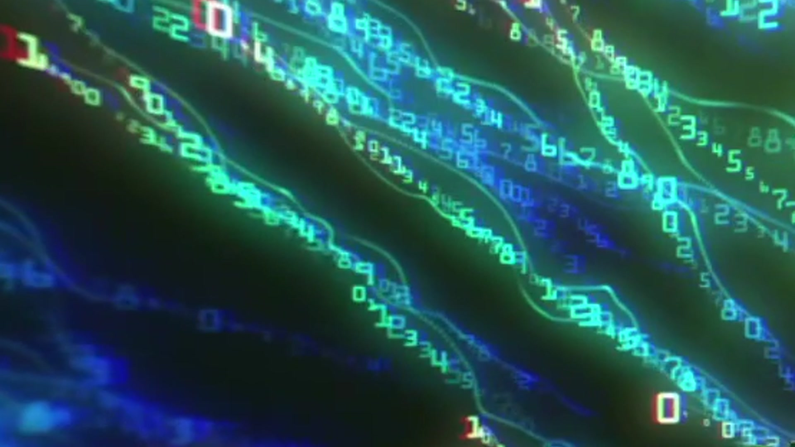
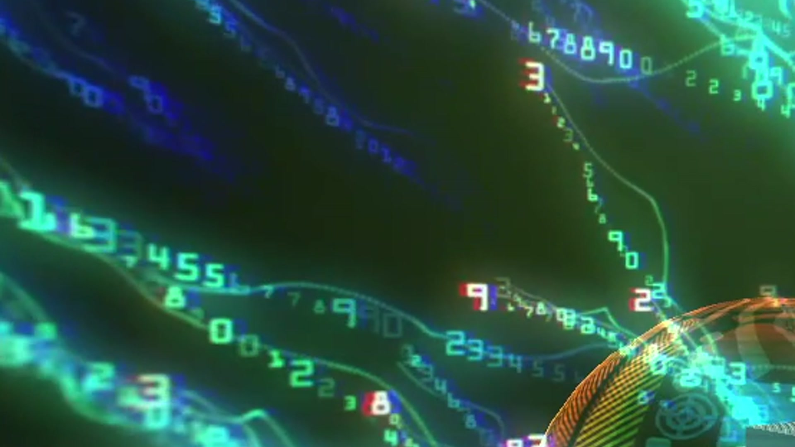
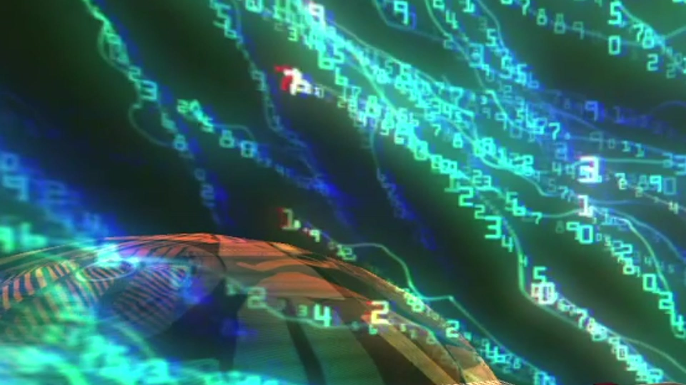

// Initialising experience
Sound Design Case Study · ASU Spring 2024
Immersive VR Sound Design
Case Study — ASU Dreamscape Learn × Meteor Studio
The Immersive Experience Design cohort at Arizona State University partnered with Dreamscape Learn and Meteor Studio to develop two parallel VR environments. Each was built by one half of the class over the course of the spring semester.
A four-person Sound Design team split 2+2 across projects. Arsh and William Mar focused exclusively on Hacked: VR — responsible for every audio decision from concept through public exhibition.
Tactical UX audio feedback tied to every physical prop interaction — the digital button, floor shakers, fans, the antivirus stick, and the lever return to the server room.
Four adaptive mood loops — one per act — shifting emotionally from soothing ambient through distorted glitch to triumphant resolution.
A scripted, eight-frame narrative arc synthesised using AI voice tools and delivered through 3D spatial audio anchored to scene positions within Unity.

Hacked: VR was publicly exhibited at the MIXibition showcase — an event open to the Mesa community, featuring immersive exhibits and artwork from ASU faculty and students.
The experience was presented alongside Urban Inferno, giving the public a live demonstration of the full dual-project initiative in completed form.
"Design audio that makes a virtual computer world feel real — narrate a cybersecurity story, trigger precise feedback on every physical interaction, and shift the emotional register from serenity to threat to triumph across four acts."
Script and synthesise four voice-over narrations — one per act — guiding the observer through the cybersecurity storyline from calm to chaos to resolution.
Compose four background mood loops shifting emotionally across acts: soothing ambient → ominous shift → distorted glitch → triumphant resolution score.
Produce ten interaction sound effects tied to physical props: the digital button, floor shakers, fans, the antivirus stick, and the lever return to the server room.
Audio representing the threat — entering, spreading, corrupting.
Audio representing the response — fighting back, restoring order.
Audio synchronised to physical actuators — floor, fans, vibration.
Audio cues triggered by direct user actions in the VR environment.
The audio blueprint was defined before any assets were produced — categories mapped to world objects and storyline so that every sound served a specific narrative or UX function.


Every physical interaction in the experience had a paired audio cue. Sound was not decorative — it was functional feedback that confirmed each action and reinforced the narrative state the observer was in.
Loopable low-frequency rumble synchronised to floor shakes — indicating the virus has entered the environment.
Fan audio matching the physical fans that activate in the direction of the flying deck during chip transport.
Distorted analog glitch — used during active cyber attack sequences and data corruption moments.
A secondary glitch texture layered over the primary attack audio to create a sense of pervasive system corruption.
The full audio production pipeline — voice synthesis, music composition, and SFX sourcing — was operated entirely from a single laptop. This consolidated, portable architecture enabled rapid iteration and seamless asset deployment throughout the project without hardware bottlenecks.
The approach proved that immersive VR audio for a publicly exhibited experience can be produced with minimal cost of entry, provided the tooling choices are deliberate.
Audio assets were integrated using Unity 2019.4.40f1, the ARCore XR Plugin, and the Dreamscape Learn SDK. The Unity XR Interaction Toolkit was used to map audio cues to real-time 3D interactions within each scene.

A fully digital pipeline — cloud voice synthesis, AI music tools, and open SFX libraries — allowed the team to iterate audio ideas quickly without hardware bottlenecks or studio access requirements.
Music and voice production can be entirely digital with minimal cost of entry. Generative AI tools significantly reduced the learning curve while expanding the range of what was achievable within a semester timeline.
Sound was not decorative — it was functional feedback. Every physical prop interaction had a paired audio cue. The haptic-audio synchronisation proved critical to the experience feeling grounded and real.
Delivering audio assets to Unity across technical teams required disciplined asset naming, act-level tagging (A1–A4, S1–S4), and timeline placement documentation to ensure correct integration.